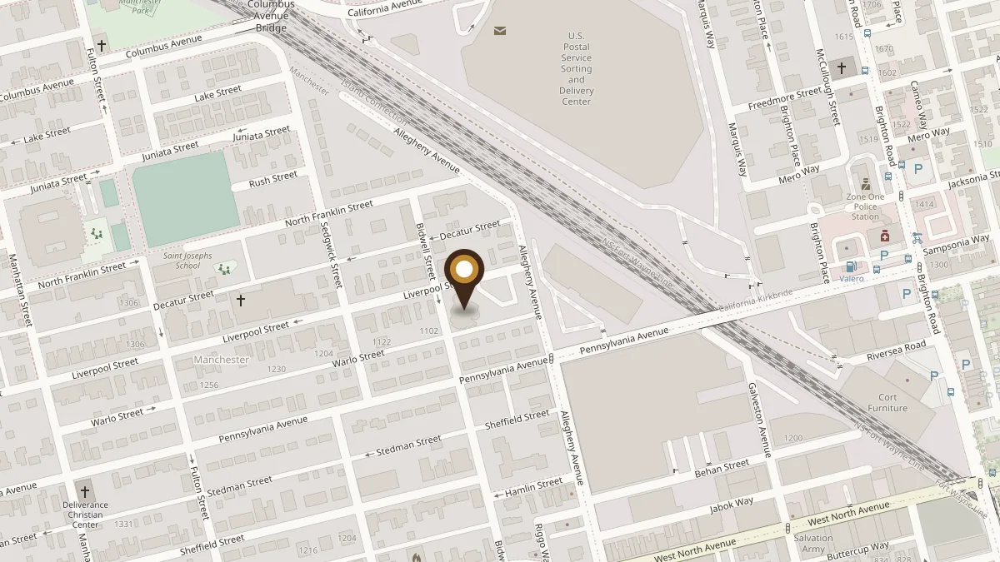

Plan a Visit
We are ready to meet you and greet you
Everything you need to know before your first Sunday at Bidwell.
Your first Sunday
Come as you are. Someone will be at the door to welcome you, help you find a seat, and answer any questions.
Children are welcome in worship with you. Partway through the service, before the message, they go downstairs together for Sunday school and rejoin the congregation afterward.
Parking and accessibility
There is a parking lot at the church, with handicapped accessible spaces. The sanctuary is on the second floor, and a ramp provides access to it.
Gather with us
Sunday Worship
11:00 a.m.
Sunday Bible Study
10:00 a.m., men’s and women’s studies
Bible Study
Wednesdays, 7:00 p.m. via Zoom
Call the church office for details
Questions?
Call the church office at 412-231-4663. We are glad to answer anything before you come, and can add you to our announcements.
Getting here
Bidwell sits at the corner of Bidwell and Liverpool Streets in Manchester, a few minutes from downtown across the Ohio River.
1025 Liverpool StreetPittsburgh, PA 15233
